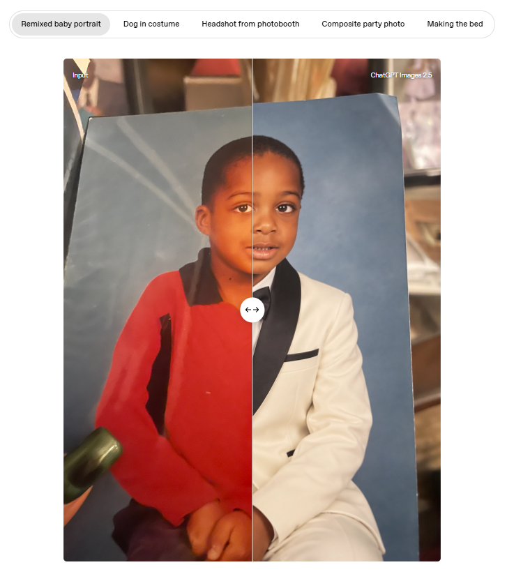

Sobre a Lumina Spark
Objetivo e tema
O objetivo deste projeto web é desenvolver um site completo e visualmente atrativo que apresente a evolução da fotografia ao longo do tempo, desde o seu surgimento até os recursos atuais. Além disso, a proposta busca abordar diferentes técnicas, estilos e finalidades da fotografia, integrando os conhecimentos adquiridos nas disciplinas de Programação e Artes. Com isso, a dupla demonstra a capacidade de planejar, organizar, desenvolver e apresentar um projeto estruturado de forma coesa. Por fim, a iniciativa visa consolidar o aprendizado prático por meio da pesquisa, criação e programação aplicadas ao universo fotográfico.
Visualizar Proposta de Trabalho do Tema pelo Professor Visualizar Documentação do Projeto